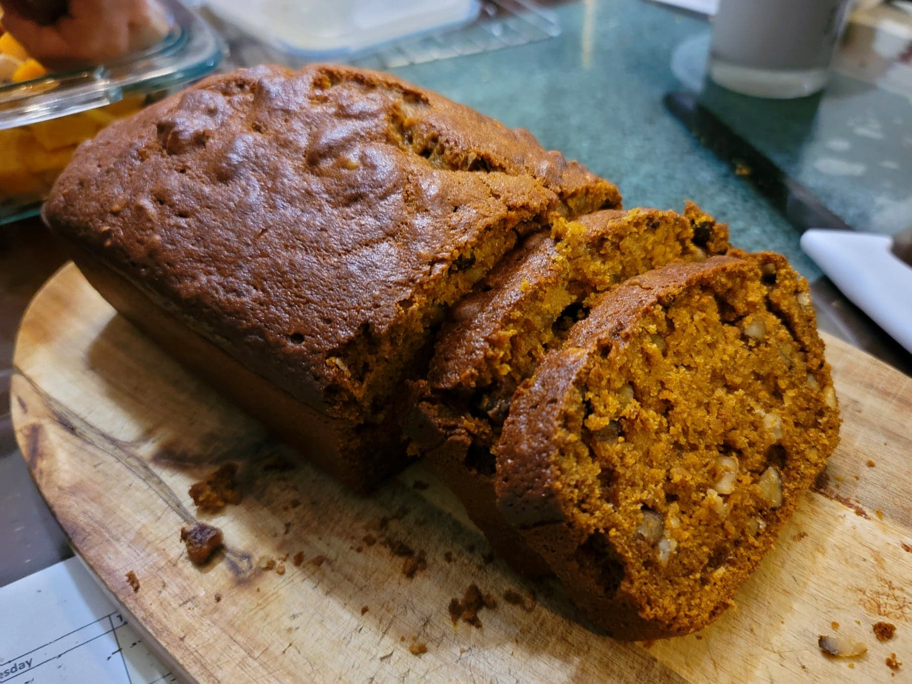

Black Walnut Bread

Ingredients:
- 180 g Flour
- 212 g Maple sugar, or normal Sugar
- 1 tsp Baking soda
- 1/2 tsp Cinnamon
- 1/4 tsp Ground ginger
- 1/4 tsp Allspice
- 1/4 tsp Salt
- 2 Eggs
- 1/2 cup Sunflower oil
- 1/3 cup Water
- 1 cup Canned pumpkin
- 1 cup Black walnuts, chopped
Instructions:
- Preheat an oven to 350 degrees Fahrenheit. Grease a loaf pan.
- Combine the dry ingredients and whisk together. Then add in the wet ingredients and whisk until homogenous. Fold in the black walnuts.
- Pour the mixture into the prepared loaf pan. Bake for about 1 hour or until a toothpick inserted into the center comes out clean.
- Remove from the loaf pan and transfer to a cooling rack to cool completely. Slice and serve toasted or at room temperature.